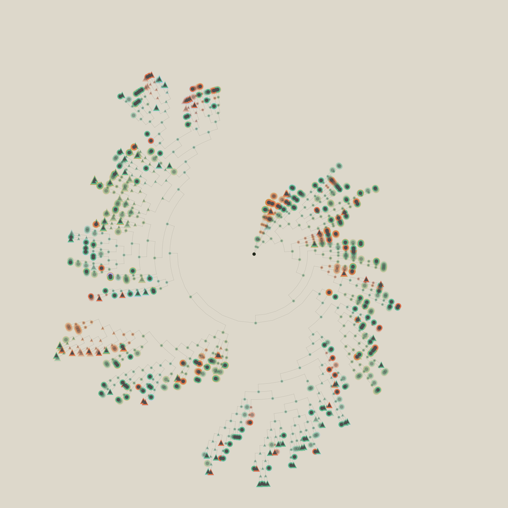
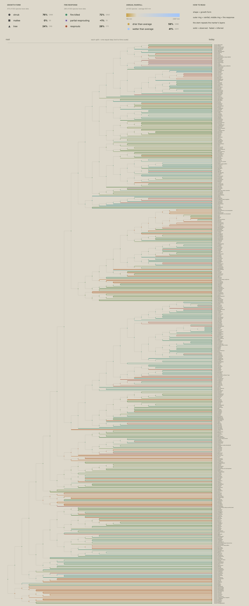
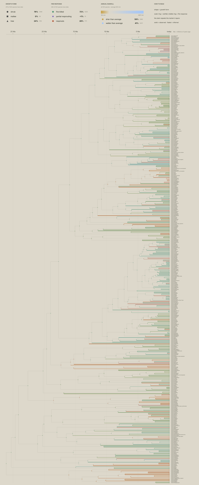

503 Acacias
A data exploration of Acacia, Australia's most successful plant genus. Starting with a peer-reviewed family tree of 503 species (Renner et al. 2020), it combines evolutionary history with trait data from AusTraits, including growth form, fire response, and annual rainfall. The underlying question is simple: when did these lineages split, and what did they become?
The project is a work in progress. So far, the data is best expressed through a timeline tree and a lineages-through-time chart, though additional views are planned. Each visualisation highlights a different aspect of the story. For now, this serves as a proof of concept and an invitation for feedback from people who understand these systems better than I do.

